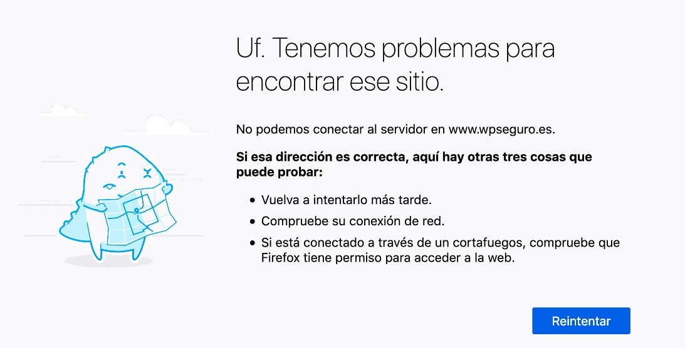
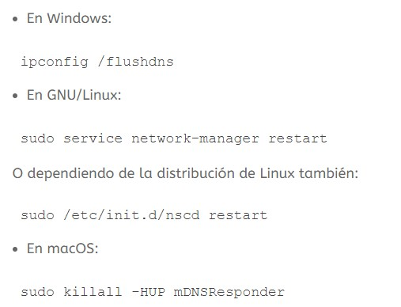
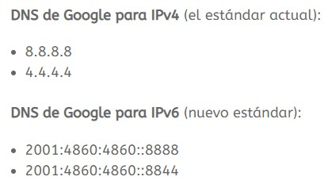
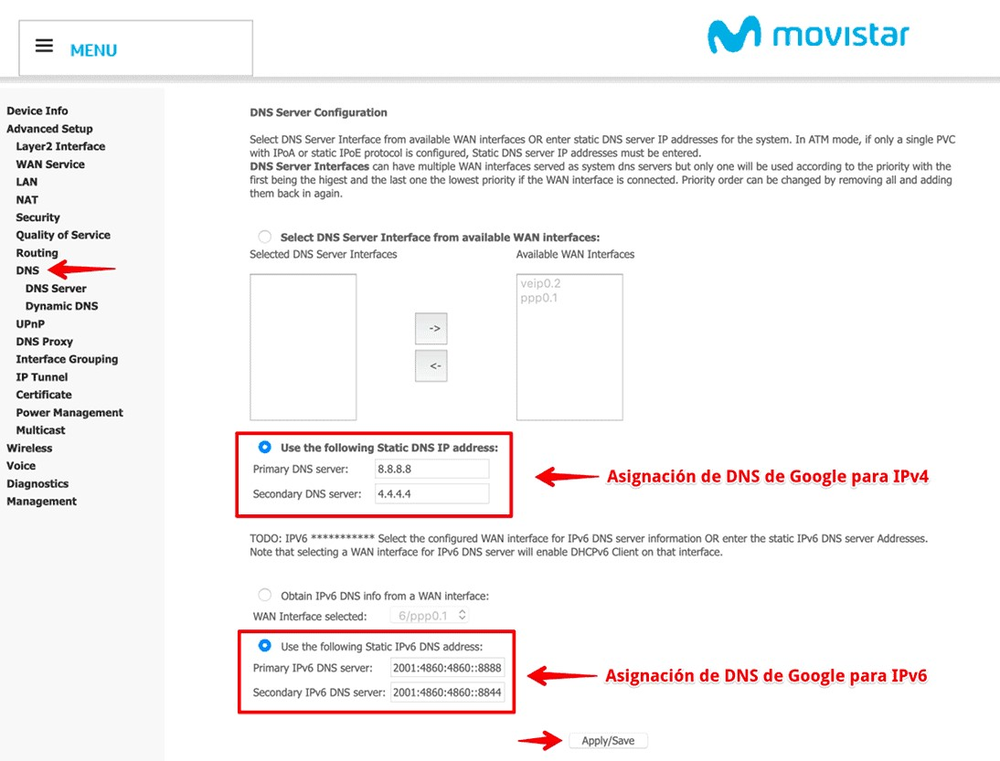

El DNS es un punto vital de la presencia y accesibilidad de tu sitio web. Cualquier usuario que intente acceder a tu sitio web a través de Internet no podrá hacerlo si los DNS asignados a tu dominio no funcionan correctamente.
Si el DNS asociado a tu web falla los visitantes que intenten acceder al sitio recibirán el mensaje de error de “página no encontrada” o “404 Page Not Found”. No es muy habitual que se presenten errores con los DNS salvo que sean por asignación incorrecta, que suele ser el escenario más común.
El servidor DNS no responde.

Este tipo de errores pueden estar causados por problemas de conexión desde el navegador con el que se trata de alcanzar o resolver determinado sitio web. Se puede dar el caso de que el error de “servidor de DNS no encontrado” se deba a un problema de funcionamiento de protocolos TCP/IP o de DHCP (común en redes de fibra) o incluso que la causa sea tu dispositivo Router o Módem.
Otras causas podrían asociarse a equipos infectados por virus o malware que dificulten la conexión a Internet.
Si por ejemplo esto sucede al tratar de abrir un sitio con el navegador Firefox, una opción que puede ayudar a descartar el problema es intentar abrir el sitio web desde otro navegador, por ejemplo Google Chrome, Opera, Bing, Safari, etc.
Asegúrate de usar siempre la versión más estable del tu navegador de uso habitual para descartar que el problema se deba a que utilices una versión obsoleta o sin soporte.
Otra solución que se debe probar siempre frente a este tipo de problemas es la limpieza o vaciado de la caché de DNS (flush DNS) que en ocasiones se queda obsoleta y es necesario vaciarla para renovarla.
Lo puedes hacer desde un terminar o consola de tu ordenador escribiendo el comando:

En el caso de que la causa sea el Router/Módem, prueba primero a apagarlo, espera un par de minutos, enciéndelo nuevamente y tras su completa activación verifica que puedes acceder a Internet y navegar con normalidad.
Si tras el reinicio del equipo de salida a Internet el problema persiste y sin embargo por otras vías, desde tu móvil por ejemplo, si tienes salida a Internet y visualiza el sitio que desde el Router/Módem no carga, plantéate contactar con tu proveedor de Internet (ISP) para que resuelva tu incidencia con tu dispositivo.
Comprueba adicionalmente que puedes navegar conectado al Router/Módem por cable de red ya que es muy posible que si lo haces habitualmente desde tu red WiFi, exista un problema de saturación del canal asignado a tu SSID de la red inalámbrica o que haya demasiada distancia entre tu dispositivo de conexión a Internet y el punto de red inalámbrica desde el que intentas conectar.
Si utilizas un cortafuegos o Firewall, prueba temporalmente a desactivar los escudos que este utilice para luego probar la navegación por Internet.
Has realizado todas esta pruebas pero el problema persiste, no te preocupes, siempre puedes asignar otros DNS a tu dispositivo de salida a Internet (Router/Módem) para que utilice por ejemplo los de Google:

Este tipo de asignaciones las puedes hacer desde tu dispositivo Router o Módem, si este lo permite en sus configuraciones:

Los servidores DNS de Google son mucho más rápidos, y actualmente funcionan con HTTPS ofreciendo seguridad, además de ser gratuitos.